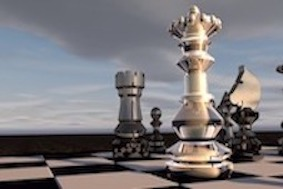

Chess and Graph Theory

Chess History/Information:
Chess, originating from a game in India called Chaturanga, has deep roots in mathematics. There are 6 different kinds of pieces, and all of them have different move sets. The King, the most important piece, can move square in every direction. The queen can move in a straight line and diagonally across the board and is known as the most powerful piece. The rook can move along the board in a straight line sideways or forward and back. The Bishop can move diagonally. The Knight moves one square diagonally and then one square straight, which looks like an ‘L’ once the move has been played. And finally, pawns can only move forward, 1 or two squares on the first move, 1 after that, and then they capture diagonally. Being that each player gets 16 total pieces on a 64-square board, it can be seen that different combinations of board arrangements are easily reached. In fact, the number of different board arrangements is so large, that no one has or probably ever will make an effort to calculate the exact number. It is said that there are an estimated 10^81 atoms in the observable universe and the number of chess arrangements far exceeds that.
Chess and very large numbers:
If you take a look at the complexity of the game of Chess, you will quickly see its relationship with very combinations and very large numbers. Even after the first move the amount of options spirals into chaos. Once both players have moved, the amount of possible board arrangements jumps to 400 possible setups. After two turns, 197,742, and then after just three turns each, there are 121 million possibles move sets. After just THREE moves.
The 8 Queens Problem:
One chess puzzle that ties in well with a unit from discrete structures is the eight queens problem. This is a well-known puzzle in chess that was solved in 1850. The idea is that there are 8 queens on the board, and there are 64 open spaces. To know how many different arrangements there are considering that the order of queens does not matter, this is a balls and bins problem. Since there are 64 for spaces, and 8 of those will be taken up by the queens, the equation to get the total number of arrangements can be modeled by:
64!⁄8!(56!)
Which is an astronomically large number. The way this puzzle is solved is to have all of the queens cover every single on of the squares on the board. Fun Fact: there is only 92 distinct correct solutions.
Knights Journey:
Another Chess puzzle that dives deep into mathematics is the knight's tour. This is a graph theory problem and is one of the most aesthetically pleasing math chess problems. The graph is made by moving the knight so it touches each square exactly once and tracing its path. Once traced out, it is oddly symmetrical.
It is extremely fascinating to watch this happen because it is hard to imagine a piece that moves in such a unique way and never touches the same square twice. Below is an animation from chess.com: